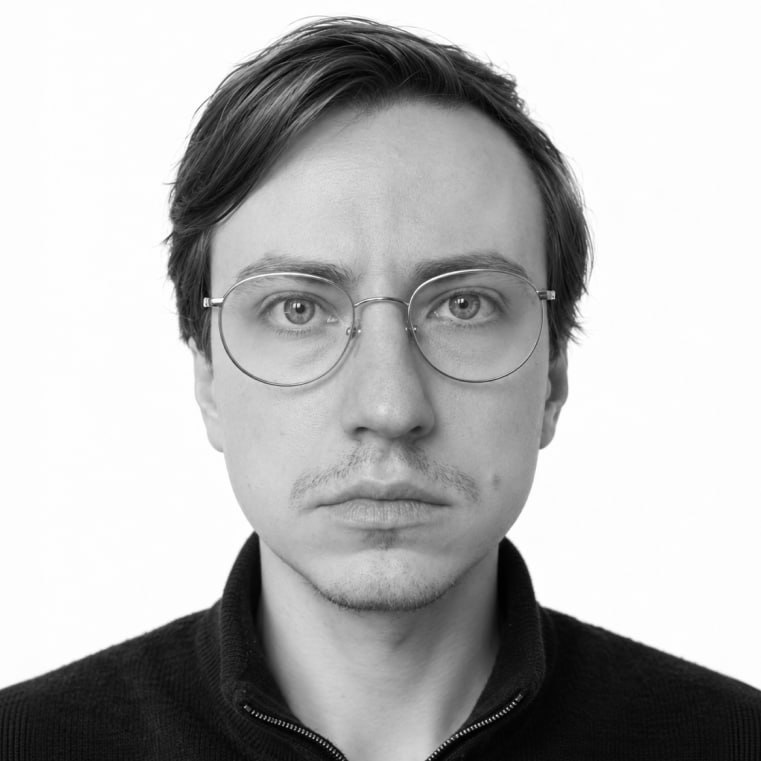

Бандельман Игорь
Дизайнер интерфейсов, исследователь
30 лет, Санкт-Петербург
4 года в индустрии
Проектирую
интерфейсы
интерфейсы
Создаю
концепции
концепции
Провожу
исследования
исследования
Занимаюсь
менторством
менторством
География проектов
Россия
Казахстан
ОАЭ
Британия
Сингапур
Испания
Больше всего работал в направлениях
ФинтехКоммуникацииБлокчейн
Где работал

О ключевых навыках
- Разработка продуктов и фичей по продуктовому циклу: от гипотезы проблемы до реализации на проде и последующего развития
- Знание продуктовых метрик и понимание, как на них влиять
- Применяю ИИ во всех аспектах работы, экспериментирую с инструментами и придумываю новые сценарии использования
- Мыслю логически и структурно. Принимаю решения, исходя из данных и смотрю шире, чем требуют задачи
- Умею выстраивать и поддерживать рабочие отношения. Фиксирую договорённости, управляю ожиданиями, работаю с обратной связью
- Хорошая насмотренность, как в дизайн-решениях, так за пределами цифровых продуктов. Могу писать тексты, работать с визуалом и оценивать клиентский опыт оффлайн
- Знания поведенческой психологии. Проектирую с учётом когнитивных искажений, принципов принятия решений и мотивации людей
О навыках проектирования
Суперсилы:
- Создание концептов
- Редизайн
- Проектирование функционала с нуля
- Построение информационной архитектуры
- Ревью работы младших коллег
- Работа в условиях высокой неопределенности
- Поиск решений для ускорения процессов проектирования
Что получается хорошо:
- Искать компромиссы между целями бизнеса и потребностями клиента
- Проектирование с учетом особенностей работы фронта и бэка
- Декомпозиция и приоритизация при большом скоупе работ
- Формирование и поддержка паттернов
- Выявление корнер-кейсов
- Организация баз знаний
- Написание спек для разработки
- Проверка гипотез качественными и количественными методами
- Организация совместного проектирования со стейкхолдерами и продуктовой командой
Сопутствующие навыки с ИИ
- Вайбкодинг ассистентов, приложений и ботов
- Генерация иллюстраций и интерфейсных анимаций
- Реверс-инжиниринг интерфейсов
- Написание спек для разработки
- Бенчмарк-анализ
- Создание фреймворков для брейнштормов
- Формирование роадмапа продукта
Другие сопутствующие навыки
Исследования:
- Воссоздание контекста для исследования
- Генерация гипотез проблем и гипотез решений
- Качественные и количественные исследования любых типов
- Аналитические исследования
- Кластеризация запросов и обращений в поддержку
- Создание скриптов исследований
- Построение CJM и выявление барьеров
- Тестирование креативных концепций
Прочее:
- Фасилитация встреч и брейнштормов
- Создание стратегии продукта совместно с бизнесом
- Способность отстаивать решения и приоритеты
- Быстрая адаптация к изменениям
- Создание и развитие бренд-платформы, нейминг, брендинг
- Проектирование с учетом доступности
- Организация дизайн-челленджей